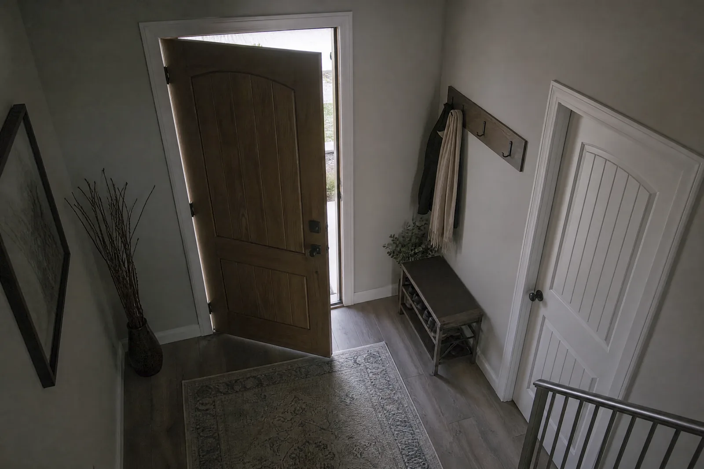
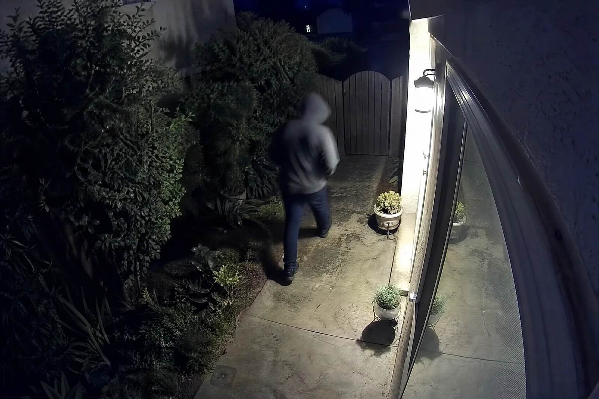
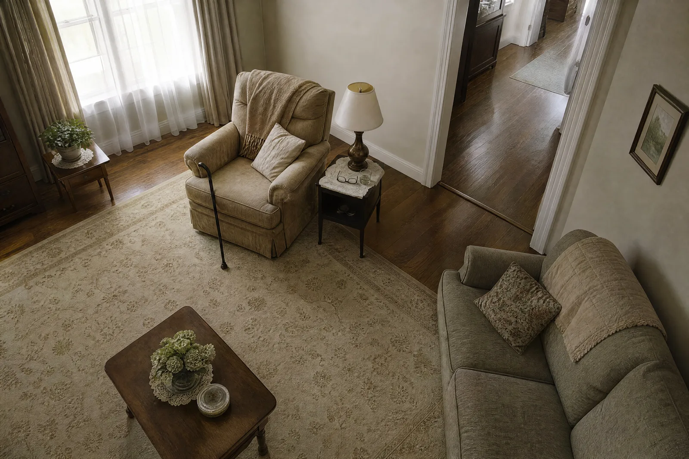
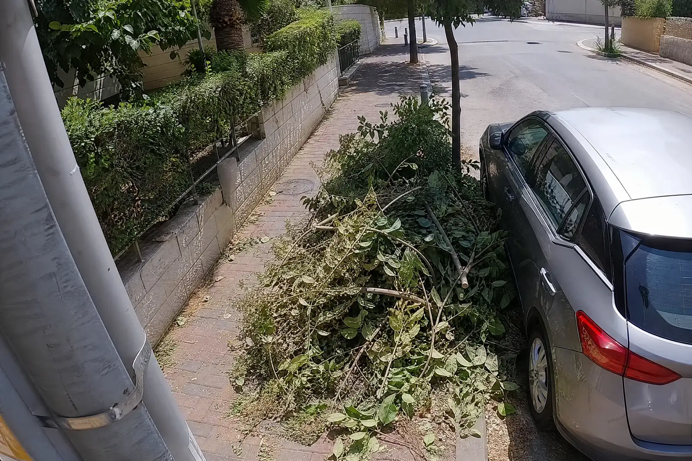
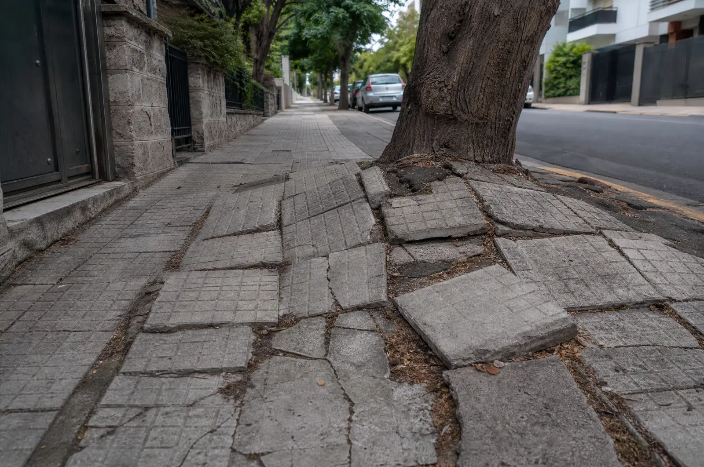

זיהוי דלת פתוחה / סגורה
המצלמה יודעת מה מצב הדלת בכל רגע — ומתי היא נשארה פתוחה יותר ממה שהגדרת.
מה זה נותן לך: אין יותר "מישהו שכח את הדלת פתוחה" שמתגלה בבוקר.
Computer Vision · קורוויז
המצלמה שכבר מותקנת אצלך נשארת. אנחנו מוסיפים לה מוח: היא מזהה את האירוע שהגדרת — ושולחת התרעה לנייד ברגע שהוא קורה.
 CAM-01 · REC
RAW
CAM-01 · REC
RAW
המצלמה מקליטה. אף אחד לא רואה מה קורה עד שמישהו יגלגל את ההקלטה אחורה.
אותו פריים, אותה מצלמה. בצד ימין — הקלטה שאף אחד לא צופה בה. בצד שמאל — אירועים עם שם, שעה והתרעה. הפריים הופק ביכולות הפנימיות של קורוויז; המסגרות הן שכבת הזיהוי כפי שהיא נראית ללקוח.
01–06 · יכולות
שש יכולות שכבר עלו מבקשות של לקוחות. כל אחת רצה על המצלמה הקיימת, מותאמת לזווית ולתאורה שלך, ומסתיימת בהתרעה — לנייד, למייל או למערכת שלך.

המצלמה יודעת מה מצב הדלת בכל רגע — ומתי היא נשארה פתוחה יותר ממה שהגדרת.
מה זה נותן לך: אין יותר "מישהו שכח את הדלת פתוחה" שמתגלה בבוקר.

אדם באזור שהגדרת, בשעות שהגדרת. לא חתול, לא ענף שזז ברוח — אדם.
מה זה נותן לך: התרעה אחת שנכונה, במקום עשרים התרעות תנועה שמתעלמים מהן.
כמה נכנסו, כמה יצאו, כמה נמצאים עכשיו — לפי קו ספירה שאתה מסמן על הפריים.
מה זה נותן לך: מספר אמיתי לכל שעה ביום, בלי סופר בכניסה. זו היכולת הבשלה ביותר שלנו — כבר רצה אצל לקוחות.

התרעה מיידית לנייד כשמזוהה נפילה — בבית של הורה מבוגר, במוסד, בחדר מדרגות של בניין.
מה זה נותן לך: לדעת תוך שניות, לא כשמישהו במקרה נכנס לחדר.
כלי התרעה שמשלים השגחה אנושית. לא מכשיר רפואי ולא תחליף לליווי.

ערימת גזם או פסולת גינה שהונחה ברחוב — מזוהה, מסומנת, ומדווחת עם מיקום ושעה.
מה זה נותן לך: לרשות או לחברת האחזקה — משאית שיוצאת לפי דיווח, לא לפי סיור.

מרצפות מורמות, סדקים, בורות — מזוהים ממצלמה קבועה או ממצלמה על רכב שעובר ברחוב.
מה זה נותן לך: מפת מפגעים שמתעדכנת לבד, במקום תלונות של תושבים.
בפיתוח
אותה מצלמה, אותה תשתית. אם אחת מהן רלוונטית לך — כדאי לדבר כבר עכשיו, כי הלקוחות הראשונים מגדירים איך היא תיראה.
חבילה שהונחה בכניסה — ומתי היא נלקחה. התרעה כשהיא נשארת בחוץ יותר מדי זמן.
רכב שנכנס לחניה שלך ולא ברשימה — עם צילום הפריים. מתאים לבניין משותף, לעסק ולחניה מקורה.
עשן או להבה בפריים של מצלמה קיימת — במחסן, במטבח תעשייתי, בחניון. התרעה בשניות, לפני שגלאי התקרה מגיב.
איך זה עובד
01
מה המצלמה צריכה לזהות, באיזה אזור בפריים, באילו שעות — ומה קורה כשזה מזוהה: הודעה לנייד, מייל, או קריאה למערכת שלך.
→ דף הגדרה של עמוד אחד
02
מתחברים למצלמה הקיימת (IP, RTSP, ONVIF או NVR). המודל מכויל על הזווית, התאורה והסביבה שלך — לא על סרטונים גנריים.
→ המערכת רצה על הפריימים שלך
03
תקופת הרצה עם יומן אירועים פתוח. מכווננים סף רגישות עד שההתרעות נכונות — ורק אז עוברים לשגרה.
→ התרעות שסומכים עליהן
ספרו ללידור מה המצלמה רואה ומה צריך לקרות כשזה מזוהה. אם זה אפשרי — נגיד תוך שיחה אחת.